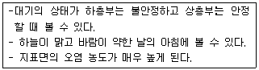
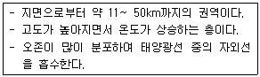
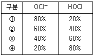

환경기능사 (2010-01-31 기출문제)
1과목: 대기오염방지
1. 다음 중 오존층의 두께를 표시하는 단위는?
- VAL
- OTL
- Pa
- Dobson
(정답률: 91%)

2. 다음 중 온실효과의 주 원인물질로 가장 적합한 것은?
- 이산화탄소
- 암모니아
- 황산화물
- 프로필렌
(정답률: 87%)
3. 연료의 완전연소 조건으로 가장 거리가 먼 것은?
- 공기(산소)의 공급이 충분해야 한다.
- 공기와 연료의 혼합이 잘 되어야 한다.
- 연소실 내의 온도를 가능한 한 낮게 유지해야 한다.
- 연소를 위한 체류시간이 충분해야 한다.
(정답률: 94%)
4. 다음 중 여과집진장치의 효율 향상 조건으로 거리가 먼 것은?
- 간헐식 털어내기 방식은 높은 집진율을 얻는 경우에 적합하고, 연속식 털어내기 방식은 고농도의 항진가스 처리에 적합하다.
- 필요에 따라 유리섬유의 실리콘 처리 등을 하여 적합한 여포재를 선택하도록 한다.
- 겉보기 여과속도가 클수록 미세한 입자를 포집한다.
- 여포의 파손 및 온도, 압력 들을 상시 파악하여 기능의 손상을 방지 한다.
(정답률: 73%)
5. 메탄 5Sm3를 공기비 1.2로 완전 연소시킬 때 필요한 이론 공기량(Sm3)은?(오류 신고가 접수된 문제입니다. 반드시 정답과 해설을 확인하시기 바랍니다.)
- 47.6
- 50.3
- 53.9
- 57.1
(정답률: 34%)
6. 다음 중 후드(Hood)를 이용하여 오염 물질을 효율적으로 흡인하는 요령으로 거리가 먼 것은?
- 발생원에 후드를 가급적으로 접근시킨다.
- 국부적인 흡인방식으로 주발생원을 대상으로 한다.
- 후드의 개구면적을 가급적으로 넓게 한다.
- 충분한 포착속도를 유지한다.
(정답률: 77%)
7. 일산화탄소의 특성으로 옳지 않은 것은?
- 무색, 무취의 기체이다.
- 물에 잘 녹고, CO2로 쉽게 산화된다.
- 연료 중 탄소의 불완전 연소 시에 발생한다.
- 헤모글로빈과의 결합력이 강하다.
(정답률: 83%)
8. 질소산화물을 촉매환원법으로 처리할 때, 어떤 물질로 환원되는가?
- N2
- HNO3
- CH4
- NO2
(정답률: 78%)
9. 다음과 같은 특성을 지닌 굴뚝 연기의 모양은?

- 환상형
- 원추형
- 훈증형
- 구속형
(정답률: 77%)
10. 다음 설명하는 대기권으로 적합한 것은?

- 열권
- 중간권
- 성층권
- 대류권
(정답률: 83%)
11. 전기집진장치에 관한 설명으로 옳지 않은 것은?
- 관성력집진장치에 비해 집진효율이 높다.
- 압력손실이 커서 동력비가 많이 소요한다.
- 약 350℃ 정도의 고온가스를 처리할 수 있다.
- 전압변동과 같은 조건변동에 쉽게 적응하기 어렵다.
(정답률: 56%)
12. 황(S)성분이 1%인 중유를 10t/h로 연소하는 보일러에서 발생하는 배출가스 중 SO2를 CaCO3로 완전 탈황하는 경우, 이론상 필요한 CaCO3의 양은?(단, 중유의 S는 모두 SO2로 배출되며, CaCO3분자량:100)
- 약 0.9t/h
- 약 0.6t/h
- 약 0.3t/h
- 약 0.1t/h
(정답률: 47%)
13. 대기오염물질과 주요 발생원의 연결로 가장 적합한 것은?
- 납 - 비료 및 암모니아 제조공업
- 수은 - 알루미늄공업, 유리공업
- 벤젠 - 석유정제, 포르말린 제조
- 브롬 - 석면제조, 니켈광산
(정답률: 72%)
14. 직렬로 조합된 집진장치의 총집진율은 99% 이었다. 2차집진장치의 집진율이 96%라며 1차 집진장치의 집진율은?
- 75%
- 82%
- 90%
- 94%
(정답률: 46%)
15. 직경이 5㎛이고 밀도가 3.7g/cm3인 구형의 먼지입자가 공기 중에서 중력침강할 때 종말침강속도는?(단, 스톡스 법칙이 적용되며, 공기의 밀도는 무시하고, 점성계수는 1.85 ×10-5kg/m·s이다.)
- 약 0.27㎝/s
- 약 0.32㎝/s
- 약 0.36㎝/s
- 약 0.41㎝/s
(정답률: 38%)
2과목: 폐수처리
16. 염소의 수중 용해상태가 다음 표와 같을 때, 살균력이 가장 큰 것은?

- ①
- ②
- ③
- ④
(정답률: 72%)
17. 다음 중 상향류 혐기성 슬러지상(UASB)의 특징으로 가장 거리가 먼 것은?
- 기계적인 교반이나 여재가 필요없기 때문에 비용이 적게 든다.
- 수리학적 체류시간을 작게 할 수 있어 반응조 용량이 축소된다.
- 고형물의 농도가 높아도 고형물 및 미생물 유실의 염려가 없다.
- 미생물 체류시간을 적절히 조절하면 저농도 유기성 폐수의 처리도 가능하다.
(정답률: 54%)
18. 미생물과 조류의 생물화학적 작용을 이용하여 하수 및 폐수를 자연 정화시키는 공법으로 , 라군(lagoon)이라고도 하며, 시설비와 운영비가 적게 들기 때문에 소규모 마을의 오수처리에 많이 이용되는 것은?
- 회전원판법
- 부패조법
- 산화지법
- 살수여상법
(정답률: 71%)
19. 응집실험에서 폐수 500ml에 0.2%-Al2(SO4)3·18H2O용액25ml를 주입하였을 때 최적조건으로 나타났다. 같은 예수를 2000m3/day로 처리 하는 경우 필요한 응집제의 양(kg/day)은? (단, 응집요액의 밀도는 0.1g/ml이다.)
- 200
- 300
- 400
- 500
(정답률: 33%)
20. 유독한 6가 크롬이 함유된 폐수를 처리하는 과정에서 환원제로 사용하기에 적합한 것은?
- O3
- Cl2
- FeSO4
- NaOCl
(정답률: 68%)
21. 1차 침전지의 깊이가 4m, 표면적 1m2에 대해 30m3/day으로 폐수가 유입된다. 이 때의 체류시간은?
- 2.3시간
- 3.2시간
- 5.5시간
- 6.1시간
(정답률: 64%)
22. 물 속에서 입자가 침강하고 있을 때 스톡스(Stokes)의 법칙이 적용된다고 한다. 다음 중 입자의 침강속도에 가장 큰 영향을 주는 변화인자는?
- 입자의 밀도
- 물의 밀도
- 물의 점도
- 입자의 직경
(정답률: 79%)
23. 물의 특성으로 옳지 않은 것은?
- 물의 밀도는 4℃에서 최소가 된다.
- 분자량이 유사한 다른 화합물에 비해 비열이 큰 편이다.
- 화학 구조적으로 극성을 띠어 많은 물질들을 녹일 수 있다.
- 상온에서 알칼리금속이나 알칼리토금속 또는 철과 반응하여 수소를 발생시킨다.
(정답률: 68%)
24. 수질관리를 위해 대장균군을 측정하는 주목적으로 가장 타당한 것은?
- 다른 수인성 병원균의 존재 가능성을 알기 위하여
- 호기성 미생물 성장가능 여부를 알기 위하여
- 공장폐수의 유입여부를 알기 위하여
- 수은의 오염정도를 측정하기 위하여
(정답률: 73%)
25. MLSS 농도 3000mg/L인 포기조 혼합액을 1000mL 메스실린더로 취해 30분간 정치시켰을 때 침강슬러지가 차지하는 용적은 440mL이었다. 이 때 슬러지밀도지수(SDI)는?
- 146.7
- 73.4
- 1.36
- 0.68
(정답률: 37%)
26. 500g의 C6H12O6가 완전한 혐기성 분해를 한다고 가정할 때 발생 가능한 CH4가스용적으로 옳은 것은? (단, 표준상태 기준)
- 24.4L
- 62.2L
- 186.7L
- 1339.3L
(정답률: 52%)
27. 활성슬러지법의 운전 조건 중 F/W비(kg BOD/kg MLSS · 일)는 얼마로 유지하는 것이 가장 적합한가?
- 200 ~ 400
- 20 ~ 40
- 2 ~ 4
- 0.2 ~ 0.4
(정답률: 62%)
28. 공장폐수 100mL를 검수로 하여 산성 100℃ KMnO4법에 의한 COD 측정을 하였을 때 시료적정에 소비된 0.025N KMnO4 용액은 5.13mL 이다. 이 폐수의 COD값은? (단, 0.025N KMnO4용액의 역가는 0.98 이고, 바탄시험 적정에 소비된 0.025N KMnO4용액은 0.13mL 이다.)
- 9.8mg/L
- 19.6mg/L
- 21.6mg/L
- 98mg/L
(정답률: 33%)
29. 0.04M NaOH 용액을 mg/L로 환산하면?
- 1.6mg/L
- 16mg/L
- 160mg/L
- 1600mg/L
(정답률: 56%)
30. 농축대상 슬러지량이 500m3/d 이고, 슬러지의 고형물 농도가 15g/L 일 때, 농축조의 고형물 부하를 2.6kg/m2·hr로 하기위해 필요한 농축조의 면적은? (단, 슬러지의 비중은 1.0 이고, 24시간 연속가동기준)
- 110.4m2
- 120.2m2
- 142.4m2
- 156.3m2
(정답률: 46%)
31. 유기물과 무기물의 함량이 각각 80%, 20%인 슬러지를 소화 처리한 후 유기물과 무기물의 함량이 모두 50%로 되었다. 이 때 소화율은?
- 50%
- 67%
- 75%
- 83%
(정답률: 61%)
32. 수질오염공정시험기준상 산성 100℃ 과망간산칼륨에 의한 화학적 산소요구량 측정 시 적정온도로 가장 적합한 것은?
- 25~30℃
- 60~80℃
- 110~120℃
- 185~200℃
(정답률: 65%)
33. 다음 중 수질오염공정시험기준상 폐수의 총인 측정실험에서 분해되기 쉬운 유기물을 함유한 시료의 전처리를 위해 사용되는 시약은?
- 수산화칼륨
- 과황산칼륨
- 중크롬산칼륨
- 질산칼륨
(정답률: 45%)
34. 지름이 20m, 깊이가 3m인 원형 침전지에서 시간당 416.7m3의 하수를 처리하는 경우 수면적 부하는? (단, 24 시간 연속가동)
- 31.8 m3/m2·day
- 36.6 m3/m2·day
- 42.0 m3/m2·day
- 48.3 m3/m2·day
(정답률: 26%)
35. 경도 (Har dness)에 관한 설명으로 거리가 먼 것은?
- Na+은 농도가 높을 때는 경도와 비슷한 작용을 하여 유사경도라 한다,
- 2가 이상의 양이온 금속의 양을 수산화칼슘으로 환산하여 ppm 단위로 표시한다.
- 센물속의 금속이온들은 세제나 비누와 결합하여 세탁효과를 떨어뜨린다.
- 경도 중 CO32-, HCO3-등과 결합한 형태로 있을 때 이를 탄산경도라 하고, 이 성분은 물을 끓일 때 제거 한다.
(정답률: 69%)
3과목: 폐기물처리
36. 분뇨의 일반적인 특성에 대한 설명 중 틀린 것은?
- 유기물을 많이 함유하고 있다.
- 고액분리가 쉽다.
- 토사 및 협잡물을 다량 함유하고 있다.
- 염분 및 질소의 농도가 높다.
(정답률: 71%)
37. 인구 100000명의 중소도시에서 발생되는 총 쓰레기의 양이 200m3/day(밀도 750kg/m3)이다. 적재량 5ton 트럭으로 운반하려면 1일 소요되는 트럭 대수는? (단, 트럭은 1일 1회 운행)
- 12대
- 18대
- 24대
- 30대
(정답률: 53%)
38. 폐기물의 중간처리 공정 중 금속, 유리, 플라스틱 등 재활용 가능한 성분을 분리하기 위한 것은?
- 압축
- 건조
- 선별
- 파쇄
(정답률: 86%)
39. 연소 시 연소온도를 높일 수 있는 조건으로 가장 거리가 먼 것은?
- 완전연소 시킨다.
- 연소용 공기를 예열한다,
- 과잉 공기량을 많게 한다.
- 발열량이 높은 연료를 사용한다.
(정답률: 79%)
40. 폐기물 시료 100kg을 달아 건조시킨 후의 시료 중량을 측정하였더니 40kg이였다. 이 폐기물의 수분함량(%,w/w)은?
- 40%
- 50%
- 60%
- 80%
(정답률: 74%)
41. 다음 중 슬러지 개량(conditioning)의 주목적은?
- 악취 제거
- 슬러지의 무해화
- 탈수성 향상
- 부패 방지
(정답률: 67%)
42. 도시 쓰레기의 조성을 분석하였더니 탄소 30%, 수소 10%, 산소45%, 질소 5%, 황 0.5%, 회분 9.5%일 때 듀롱(Dulong)식을 이용한 고위발열량은?
- 약 2450 kcal/kg
- 약 3940 kcal/kg
- 약 4440 kcal/kg
- 약 5360 kcal/kg
(정답률: 55%)
43. 다음 중 유해 폐기물의 국제적 이동의 통제와 규제를 주요 골자로 하는 국제협약(의정서)은?
- 교토의정서
- 바젤 협약
- 비엔나 협약
- 몬트리올 의정서
(정답률: 82%)
44. 기계적인 탈수방법에 관한 다음 각 설명 중 가장 거리가 먼 것은?
- 원심분리 탈수를 이용하기 위해서는 슬러지의 고형물의 비중이 물보다 작아야 하며, 정기적 보수는 거의 불필요하다.
- 필터프레스는 여과천으로 덮여있는 판 사이로 슬러지를 공급시켜 가동한다.
- 진공 탈수에는 rotary drum형, belt형, solid bowl형 등이 있다.
- 원심분리 탈수에는 basket형, disk nozzle형, solid bowl형 등이 있다.
(정답률: 66%)
45. 다단로 소각에 대한 내용으로 틀린 것은?
- 체류시간이 길어 특히 휘발성이 적은 폐기물의 연소에 유리하다.
- 온도 반응이 비교적 신속하여 보조 연료 사용조절이 용이 하다.
- 다량의 수분이 비교적 신속하여 보조연료 사용조절이 용이 하다,
- 물리 · 화학적 성분이 다른 각종 폐기물을 처리 할 수 있다.
(정답률: 50%)
46. 폐기물관리법령상 지정 폐기물 중 부식성폐기물의 “폐산” 기준으로 옳은 것은?
- 액체상태의 폐기물로서 수소이온 농도지수가 2.0 이하인 것으로 한정한다.
- 액체상태의 폐기물로서 수소이온 농도지수가 3.0 이하인 것으로 한정한다.
- 액체상태의 폐기물로서 수소이온 농도지수가 5.0 이하인 것으로 한정한다.
- 액체상태의 폐기물로서 수소이온 농도지수가 5.5 이하인 것으로 한정한다.
(정답률: 64%)
47. 폐기물공정시험기준(방법)상 용어의 정의 중 “함량으로 될 때까지 건조 한다.”의 의미로 가장 적합한 것은?
- 같은 조건에서 1시간 더 건조할 때 전후 무게의 차가 g당 0.3mg 이하일 때를 말한다.
- 같은 조건에서 1시간 더 건조할 때 전후 무게의 차가 g당 0.5mg 이하일 때를 말한다.
- 같은 조건에서 1시간 더 건조할 때 전후 무게의 차가 g당 1mg 이하일 때를 말한다.
- 같은 조건에서 1시간 더 건조할 때 전후 무게의 차가 g당 5mg 이하일 때를 말한다.
(정답률: 61%)
48. 퇴비화 공정에 관한 설명으로 가장 적합한 것은?
- 크기를 고르게 할 필요 없이 발생된 그대로의 상태로 숙성시킨다.
- 미생물을 사멸시키기 위해 최적 온도는 90℃ 정도로 유지한다.
- 충분히 물을 뿌려 수분을 100%에 가깝게 유지한다.
- 소비된 산소의 보충을 위해 규칙적으로 교반한다.
(정답률: 60%)
49. 인구 2650000명인 도시에서 1154000ton/year의 쓰레기가 발생하였다. 이 도시의 1인당 1일 쓰레기 발생량은?
- 0.98kg/인 ·일
- 1.19kg/인 ·일
- 1.51kg/인 ·일
- 2.14kg/인 ·일
(정답률: 59%)
50. 다음 중 효율적인 파쇄를 위해 파쇄대상물에 작용하는 3가지 힘에 해당되지 않는 것은?
- 충격력
- 정전력
- 전단력
- 압축력
(정답률: 84%)
51. RDF에 대한 설명으로 틀린 것은?
- 소각로에서 사용할 경우 부식발생으로 수명이 단축 될 수 있다.
- 폐기물 중의 가연성 물질만을 선별하여 함수율, 불순물, 입경 등을 조절하여 연료화 시킨 것이다.
- 부패하기 쉬운 유기물질로 구성되어 있기 때문에 수분 함량이 증가하면 부패한다.
- RDF 소각로의 경우 시설비 및 동력비가 저렴하며, 운전이 용이하다.
(정답률: 66%)
52. 폐기물 매립지의 덮개시설에 대한 설명으로 가장 거리가 먼 것은?
- 덮개 시설은 매립 후 안전한 사후 관리를 위해 필요하다.
- 덮개 흙으로 가장 적합한 것은 clay이며, 투수계수가 큰 것이 좋다
- 덮개 흙은 연소가 잘 되지 않아야 한다.
- 덮개 시설은 악취, 비산, 해중 및 야생동물 번식, 화재방지 등을 위해 설치한다.
(정답률: 74%)
53. 처음 부피가 1000m3인 폐기물을 압축하여 500m3인 상태로 부피를 감소시켰다면 체적 감소율은?
- 2%
- 10%
- 50%
- 100%
(정답률: 72%)
54. 수분함량이 25%(w/w)인 쓰레기를 건조시켜 수분함량이 10%(w/w)인 쓰레기로 만들려면 쓰레기 1톤당 약 얼마의 수분을 증발시켜야 하는가?
- 46kg
- 83kg
- 167kg
- 250kg
(정답률: 57%)
55. 도시 폐기물의 개략분석(proximate analysis) 시 4가지 구성성분에 해당하지 않는 것은?
- 다이옥신(dioxin)
- 휘발성 고형물(volsatile solids)
- 고정탄소(fixed carbon)
- 회분(ash)
(정답률: 72%)
4과목: 소음 진동학
56. 60phon의 소리는 50phon의 소리에 비해 몇 배 크게 들리는가?
- 2배
- 3배
- 4배
- 5배
(정답률: 56%)
57. 음세기 레벨이 80dB인 전동기 3대가 동시에 가동된다면 합성 소음 레벨은?
- 약 81dB
- 약 83dB
- 약 85dB
- 약 89dB
(정답률: 42%)
58. 소음원의 형태가 점음원의 경우 음원으로부터 거리가 2배 멀어질 때 음압레벨의 감쇠치는?
- 1dB
- 3dB
- 6dB
- 9dB
(정답률: 66%)
59. 투과 손실이 32dB인 벽체의 투과율은?
- 3.2×10-3
- 3.2×10-4
- 6.3×10-3
- 6.3×10-4
(정답률: 50%)
60. 소음제어를 위한 방법 중 기류음(공기음)의 발생대책이 아닌 것은?
- 분출유속의 저감
- 관의 곡률 완화
- 밸브의 다단화
- 가진력 억제
(정답률: 50%)
이유: Dobson은 오존층의 두께를 측정하는 단위로, 오존 분자가 대기 중에 얼마나 많이 존재하는지를 나타내는 단위입니다. 따라서 Dobson은 오존층의 두께를 직접적으로 나타내는 단위입니다. 다른 보기들은 대기압(Pa), 유전체 외부 노출 한계선(OTL), 유효한 광도(VAL) 등과 같이 오존층의 두께와는 직접적인 연관성이 없는 단위들입니다.